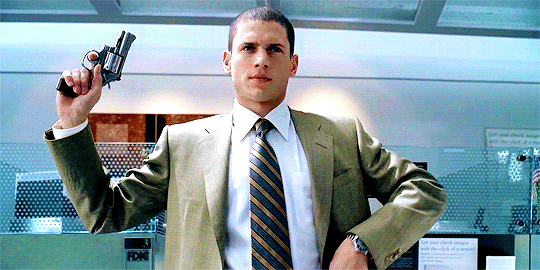
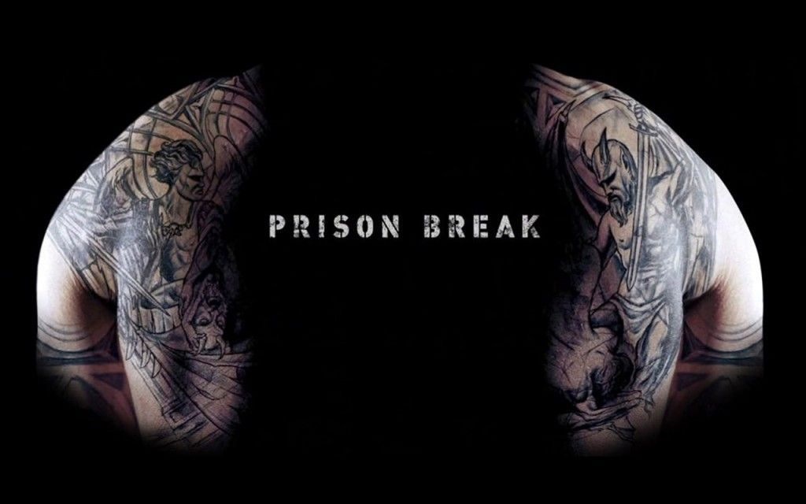
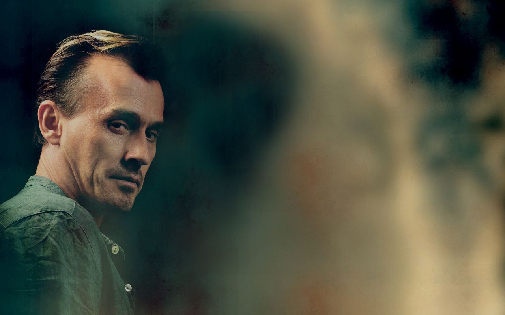

Prison Break
After Lincoln is imprisoned, Michael stages a bank robbery and is sent to Fox River where he meets inmates such as John Abruzzi – who helps to arrange a getaway plane, and Charles Westmoreland – also known as DB Cooper, who has $5 million hidden in cash. Michael reveals that his architecture firm had previously worked on retrofitting Fox River, meaning that he had access to its blueprints. Before the robbery, he spent four months having a huge tattoo inked on to his torso, which contains the plans to the prison and details of their escape plot.As the men prepare to escape Michael feigns diabetes in order to get daily access to the infirmary, with the intention of stealing a key from Sara. Michael and Sara become romantically involved. He tells her about his plan to break out of the prison, and asks her to leave the infirmary door unlocked on the night of the escape. Sara reluctantly helps, but her guilt drives her to overdose on pills. Meanwhile the Fox River Eight hatch their plan and successfully break out of the prison. But when they get to an air field their escape plane is nowhere to be seen.

Season 2
The story picks up hours after the escape. The Fox River Eight split up to evade capture from FBI Special Agent Alex Mahone and to search for Cooper’s hidden $5 million. Michael and Lincoln are reunited with Sara – who survived her suicide attempt but has turned to alcohol and drugs after being fired. It is revealed that Mahone is working for The Company – the mysterious organisation that framed Lincoln – as is the new US President Caroline Reynolds.Sara allows herself to be arrested to ensure the brothers safety, but she and Lincoln are later pardoned. Michael, T-Bag and Mahone are not so lucky and are arrested in Panama along with Bellick – a Fox River prison guard who has been chasing the escapees to win a reward. They are sent to Sona prison – a dangerous place run by inmates and guarded only from the outside following a huge riot.

Season 3
It is revealed that The Company orchestrated Michael’s arrest so that he could break a man named Whistler out of Sona. While Lincoln launches his own bid to free his brother, Michael and Whistler start working from the inside to escape the prison. Lincoln is forced to negotiate with a Company operative named Gretchen Morgan, who has kidnapped his son LJ and Michael’s lover Sara. Gretchen tells Lincoln that she has beheaded Sara, but lets LJ free in exchange for Whistler after the men escape.
Season 4
Michael and Lincoln are recruited by Homeland security agent Don Self to recover a device named Syclla, which they believe contains information on The Company and could expose the conspiracy. Sara is found alive and well, but Bellick dies when he sacrifices himself to help the team. The brothers discover that Syclla is not The Company’s address book, but instead contains plans for an advanced renewable power cell.Self is revealed to be a double agent who plans to sell Syclla to the highest bidder, and another Company agent named Christine is revealed to be Michael’s mother – previously thought to be dead. Christine reveals that Lincoln was adopted, explaining the difference between their IQs. She attempts to shoot Michael, but is killed by Sara. The final scene takes place four years after Christine’s death, which brought about the end of The Company. Sara, Lincoln and the other men have all been given immunity and are seen visiting Michael’s grave.
The Final Break
Prison Break’s last outing was a two-hour TV movie which filled in the gap between the stand-off with Christine and Michael’s death. Michael and Sara get married and conceive a child, but shortly afterwards Sara is arrested for Christina’s murder. A bounty is put on Sara’s head in prison, forcing Michael, Lincoln and Sucre to launch yet another break-out.During the escape, a tool Michael has brought to open an electronic lock fails, leaving him with no choice but to cause a huge power surge which kills him. His final sacrifice allows Sara to escape, and she and Lincoln head for the Dominican Republic. In the closing scene Sara watches a DVD message from Michael, revealing that he would have died from a brain tumour even if he had survived the final break.